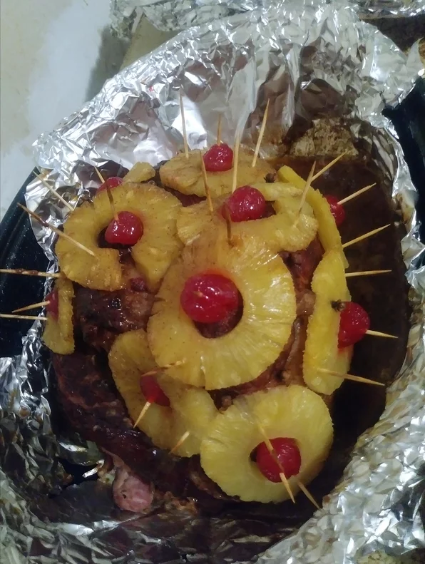

Ham with Pineapple

Description
This ham is easy, loved by all, and requested every year for Christmas and Easter.
Thats a winning recipe in my book! For this version, I added a little ground clove to
the sugar, and I skipped the cherries, but feel free to add them if you want to go retro.
Ingredients
- 1 (12 pound) bone-in ham
- 1/2 cup whole cloves
- 1 (20 ounce) can pineapple rings in heavy syrup
- 1/2 cup packed brown sugar
1 (12 fluid ounce) can or bottle lemon-lime flavored carbonated beverage
- 1 (4 ounce) jar chopped maraschino cherries
Steps
- Preheat the oven to 325 degrees F (160 degrees C).
- Place ham in a roasting pan. Score the rind of the ham with a diamond pattern. Press a clove into the center of each diamond. Drain the juice from the pineapple rings into a medium bowl, and stir in the brown sugar and lemon-lime soda. Coat the ham with this mixture. Arrange the pineapple rings over the outside of the ham. Place a maraschino cherry in the center of each pineapple ring, and secure with a toothpick.
- Bake uncovered for 4 to 5 hours, basting frequently with the juices, until the internal temperature of the ham is 160 degrees F (72 degrees C). Be sure the meat thermometer is not touching the bone. Remove toothpicks before serving.